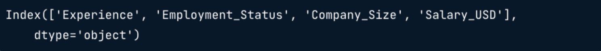
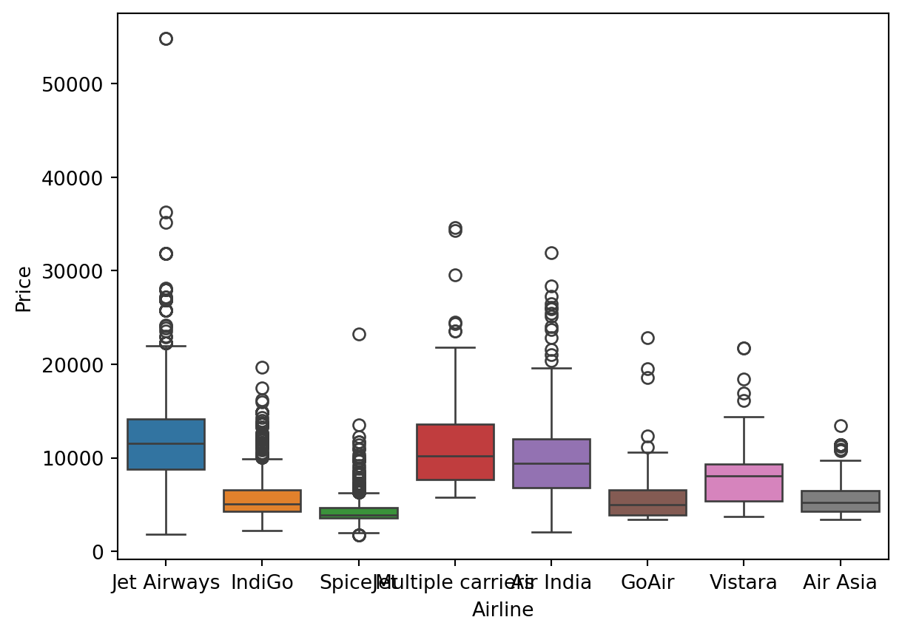

print(salaries.isna().sum())Limpieza e imputación de datos
Explorar y analizar datos a menudo significa tratar con valores perdidos, tipos de datos incorrectos y valores atípicos. En este capítulo, aprenderás técnicas para gestionar estos problemas y agilizar tus procesos en EDA.
Tratar los datos que faltan
Por qué un dato faltante es un problema?
- Afectan las distribuciones
- Los datos de la población son menos repreesntativos
- Puede resultar en conclusiones incorrectas
Ejemplo datos de profesionales de datos
| Column | Description | Data type |
|---|---|---|
Working_Year |
Year the data was obtained | Float |
Designation |
Job title | String |
Experience |
Experience level e.g., "Mid", "Senior" |
String |
Employment_Satus |
Type of employment contract e.g., "FT", "PT" |
String |
Employee_Location |
Country of employment | String |
Company_Size |
Labels for company size e.g., "S", "M", "L" |
String |
Remote_Working_Ratio |
Porcentage of time working remotely | Integer |
Salary_USD |
Salary in US dollars | Float |
- Revisando los datos faltantes

Estrategias para el manejo de datos faltantes
Eliminar los datos faltantes
- 5 % o menos del total de valores
Imputar la media, mediana o la moda
- Depende de la distribución y contexto
Imputar por sub-grupos
- Diferentes niveles de experiencia tienen diferente mediana en el salario
Eliminando valores faltantes
threshold = len(salaries) * 0.05
print(threhold)
cols_to_drop = salaries.columns[salaries.isna().sum() <= threshold]
print(cols_to_drop)
salaries.dropna(subset=cols_to_drop, inplace=True) # Para actualizar el DataFrame- Imputando una estadística de resumen
cols_with_missing_values = salaries.columns[salaries.isna().sum() > 0]
print(cols_with_missing_values)
for col in cols_with_missing_values[:-1]:
salaries[col].fillna(salaries[col].mode()[0])- Revisando los valores faltantes que faltan
print(salaries.isna().sum())
- Imputando por subgrupo
salaries_dict = salaries.groupby('Experience')['Salary_USD'].median().to_dict()
print(salaries_dict)
salaries['Salary_USD'] = salaries['Salary_USD'].fillna(salaries['Experience'].map(salaries_dict))
Tratar los datos que faltan
Es importante tratar los datos que faltan antes de empezar el análisis.
Un enfoque consiste en descartar los valores que faltan si representan una pequeña proporción, normalmente el 5 %, de los datos.
Trabajando con un conjunto de datos sobre precios de tiquetes de avión, almacenado como un DataFrame de pandas llamado planes, tendrás que contar el número de valores perdidos en todas las columnas, calcular el cinco porciento de todos los valores, utilizar este umbral para eliminar observaciones y comprobar cuántos valores perdidos quedan en el conjunto de datos.
import pandas as pd
ruta = './data/planes.csv'
planes = pd.read_csv(ruta)
print(planes.head)<bound method NDFrame.head of Airline Date_of_Journey Source Destination \
0 Jet Airways 9/06/2019 Delhi Cochin
1 IndiGo 12/05/2019 Kolkata Banglore
2 IndiGo 01/03/2019 Banglore New Delhi
3 SpiceJet 24/06/2019 Kolkata Banglore
4 Jet Airways 12/03/2019 Banglore New Delhi
... ... ... ... ...
10655 Air Asia 9/04/2019 Kolkata Banglore
10656 Air India 27/04/2019 Kolkata Banglore
10657 Jet Airways 27/04/2019 Banglore Delhi
10658 Vistara 01/03/2019 Banglore New Delhi
10659 Air India 9/05/2019 Delhi Cochin
Route Dep_Time Arrival_Time Duration Total_Stops \
0 DEL → LKO → BOM → COK 09:25 04:25 10 Jun 19h 2 stops
1 CCU → NAG → BLR 18:05 23:30 5h 25m 1 stop
2 BLR → NAG → DEL 16:50 21:35 4h 45m 1 stop
3 CCU → BLR 09:00 11:25 2h 25m non-stop
4 BLR → BOM → DEL 18:55 10:25 13 Mar 15h 30m 1 stop
... ... ... ... ... ...
10655 CCU → BLR 19:55 22:25 2h 30m non-stop
10656 CCU → BLR 20:45 23:20 2h 35m non-stop
10657 BLR → DEL NaN 11:20 3h non-stop
10658 BLR → DEL 11:30 14:10 2h 40m non-stop
10659 DEL → GOI → BOM → COK 10:55 19:15 8h 20m 2 stops
Additional_Info Price
0 No info 13882.0
1 No info 6218.0
2 No info 13302.0
3 No info 3873.0
4 In-flight meal not included 11087.0
... ... ...
10655 No info 4107.0
10656 No info 4145.0
10657 NaN 7229.0
10658 No info 12648.0
10659 No info 11753.0
[10660 rows x 11 columns]>Instrucciones
- Imprime el número de valores perdidos en cada columna del DataFrame
# Count the number of missing values in each column
print(planes.isna().sum())Airline 427
Date_of_Journey 322
Source 187
Destination 347
Route 256
Dep_Time 260
Arrival_Time 194
Duration 214
Total_Stops 212
Additional_Info 589
Price 616
dtype: int64- Calcula a cuántas observaciones equivale el cinco porciento del DataFrame
planes
# Find the five percent threshold
threshold = len(planes) * 0.05
print(threshold)533.0Crea
cols_to_dropaplicando una indexación booleana a las columnas del DataFrame con valores perdidos menores o iguales que el umbral.Utiliza este filtro para eliminar los valores que faltan y guardar el DataFrame actualizado.
# Create a filter
cols_to_drop = planes.columns[planes.isna().sum() <= threshold]
print(cols_to_drop)
# Drop missing values for columns below the threshold
planes.dropna(subset=cols_to_drop, inplace=True)
print(planes.isna().sum())Index(['Airline', 'Date_of_Journey', 'Source', 'Destination', 'Route',
'Dep_Time', 'Arrival_Time', 'Duration', 'Total_Stops'],
dtype='object')
Airline 0
Date_of_Journey 0
Source 0
Destination 0
Route 0
Dep_Time 0
Arrival_Time 0
Duration 0
Total_Stops 0
Additional_Info 300
Price 368
dtype: int64Al crear un umbral de valores faltantes y usarlo para filtrar columnas, haz logrado eliminar los valores faltantes de todas las columnas excepto "Additinal_Info" y "Price".
Estrategias para datos que faltan
La regla del cinco porciento ha funcionado muy bien en tu conjunto de dato planes, ¡eliminando los valores perdidos de nueve de las 11 columnas!
Ahora tienes que decidir qué hacer con las columnas "Additional_Info" y "Price", a las que les faltan los valores 300 y 368 respectivamente.
Primero echarás un vistazo a lo que contiene "Additional_Info", y después visualizarás el precio de los billetes de avión de distintas compañías aéreas.
import matplotlib.pyplot as plt
import seaborn as snsInstrucciones
- Imprime los valores y frecuencias de
"Additional_Info".
# Check the values of the Additional_Info column
print(planes['Additional_Info'].value_counts())Additional_Info
No info 6399
In-flight meal not included 1525
No check-in baggage included 258
1 Long layover 14
Change airports 7
No Info 2
Business class 1
Red-eye flight 1
2 Long layover 1
Name: count, dtype: int64- Crea un boxplot de
"Price"frente a"Airline"
# Create a box plot of Price by Airline
sns.boxplot(data=planes, x='Airline', y='Price',
hue='Airline', legend=False)
plt.show()
- Pregunta
- ¿Cómo debes tratar los valores que faltan en
"Additional_Info"y"Price".?
Respuestas Posibles
No necesitamos la columna "Additional_Info", y deberías imputar la mediana de "Price" por "Airline" para representar los datos con precisión.
Imputar los precios de los aviones que faltan
!Ahora solo queda una columna con valores perdidos!
Has eliminado la columna "Additional_Info" de planes, el último paso es imputar los datos que faltan en la columna "Price" del conjunto de datos.
Como recordatorio, tú generaste este diagrama de caja, que sugería que imputar el precio medio basándose en el "Airline" ¡es un enfoque sólido!
# Eliminamos la columna Additional_Info
planes = planes.drop('Additional_Info', axis=1)
planes.columnsIndex(['Airline', 'Date_of_Journey', 'Source', 'Destination', 'Route',
'Dep_Time', 'Arrival_Time', 'Duration', 'Total_Stops', 'Price'],
dtype='object')Instrucciones
- Agrupa
planespor aerolínea y calcula el precio medio.
# Calculate median plane ticket prices by Airplane
airline_prices = planes.groupby('Airline')['Price'].median()
print(airline_prices)Airline
Air Asia 5192.0
Air India 9443.0
GoAir 5003.5
IndiGo 5054.0
Jet Airways 11507.0
Multiple carriers 10197.0
SpiceJet 3873.0
Vistara 8028.0
Name: Price, dtype: float64- Convierte los precios medios agrupados en un diccionario.
# Convert to a dictionary
prices_dict = airline_prices.to_dict()
print(prices_dict){'Air Asia': 5192.0, 'Air India': 9443.0, 'GoAir': 5003.5, 'IndiGo': 5054.0, 'Jet Airways': 11507.0, 'Multiple carriers': 10197.0, 'SpiceJet': 3873.0, 'Vistara': 8028.0}Imputa condicionalmente los valores perdidos de
"Price"asignando los valores de la columna"Airline"en función deprices_dictComprueba si faltan valores
# Map the dictionary to missing values of Price by Airline
planes['Price'] = planes['Price'].fillna(planes['Airline'].map(prices_dict))
# Check for missing values
print(planes.isna().sum())Airline 0
Date_of_Journey 0
Source 0
Destination 0
Route 0
Dep_Time 0
Arrival_Time 0
Duration 0
Total_Stops 0
Price 0
dtype: int64Convertiste un DataFrame agrupado a un diccionario y luego lo usaste para llenar condicionalmente los valores faltantes de "Price" basándote en "Airline". Ahora vamos a explorar cómo realizar análisis exploratorio en datos categóricos.
Convertir y analizar datos categóricos
- Previsualizar los datos
print(salaries.select_dtypes('object').head())
- Títulos de los trabajos
print(salaries['Designation'].value_counts())
print(salaries['Designation'].nunique())

Extrayendo valores desde las categorías
El formato actual de los datos limita la capacidad de generar información.
pandas.Series.str.contains()- Busca en una columna una cadena especifica o múltiples cadenas.
salaries['Designation'].str.contains('Scientist')
Filtrar filas que contienen una o más frases
- Palabras de interes: Machine Learning o AI
salaries['Designation'].str.contains('Machine Learning|AI')
Buscar múltiples frases en una cadena de caracteres
- Palabras de interes: Cualquiera que inicie con Data
salaries['Designation'].str.contains('ˆData')
Ahora que se tiene una idea de cómo funciona este método, definamos una lista de títulos de trabajo que queremos encontrar:
job_categories = ['Data Science', 'Data Analytics',
'Data Engineering', 'Machine Learning',
'Managerial', 'Consultant']Luego necesitamos crear variables que contengan nuestros filtros
data_science = 'Data Scientist|NLP'
data_analyst = 'Analyst|Analytics'
data_engineer = 'Data Engineer|ETL|Architect|Infrastructure'
ml_engineer = 'Machine Learning|ML|Bid Data|AI'
manager = 'Manager|Head|Director|Lead|Principal|Staff'
consultant = 'Consultant|Freelance'El siguiente paso es crear una lista con nuestro rango de condiciones para el método str.contains
conditions = [
(salaries['Designation'].str.contains(data_science)),
(salaries['Designation'].str.contains(data_analyst)),
(salaries['Designation'].str.contains(data_engineer)),
(salaries['Designation'].str.contains(ml_engineer)),
(salaries['Designation'].str.contains(manager)),
(salaries['Designation'].str.contains(consultant))
]Finalmente, podemos crear nuestra nueva columna Job_Category usando la función de selección de Numpy
salaries['Job_Category'] = np.select(conditions,
job_categories,
default='Other')Al obtener una vista previa de la Designación y nuestra nueva columna Job_Category, podemos verificar los primeros cinco valores.
print(salaries[['Designation', 'Job_Category']].head())
- Visualización de la frecuencia de la categoría job
sns.countplot(data=salaries, x='Job_Category')
plt.show()
Encontrar el número de valores únicos
Te gustaría practicar algunas de las habilidades de manipulación y análisis de datos categóricos que acabas de ver. Para ayudarte a identificar qué datos podrían reformatearse para extraer valor, vas a averiguar qué columnas no numéricas del conjunto de datos planes tienen un gran número de valores únicos.
Instrucciones
Filtra
planespara las columnas que sean del tipo datos"object".Recorre las columnas del conjunto de datos.
Añade el iterador de columna a la sentencia print y, a continucación, llama a la función para que devuelva el número de valores únicos de la columna.
# Filter the DataFrame for objects columns
non_numeric = planes.select_dtypes('object')
# Loop through columns
for column in non_numeric.columns:
# Print the number of unique values
print(f"Number of unique values in {column} column: {non_numeric[column].nunique()}")Number of unique values in Airline column: 8
Number of unique values in Date_of_Journey column: 44
Number of unique values in Source column: 5
Number of unique values in Destination column: 6
Number of unique values in Route column: 122
Number of unique values in Dep_Time column: 218
Number of unique values in Arrival_Time column: 1220
Number of unique values in Duration column: 362
Number of unique values in Total_Stops column: 5Curiosamente, "Duration" es actualmente una columna de tipo objeto cuando debería ser una columna numérica, ¡y tiene 362 valores únicos! Vamos a averiguar más sobre esta columna.